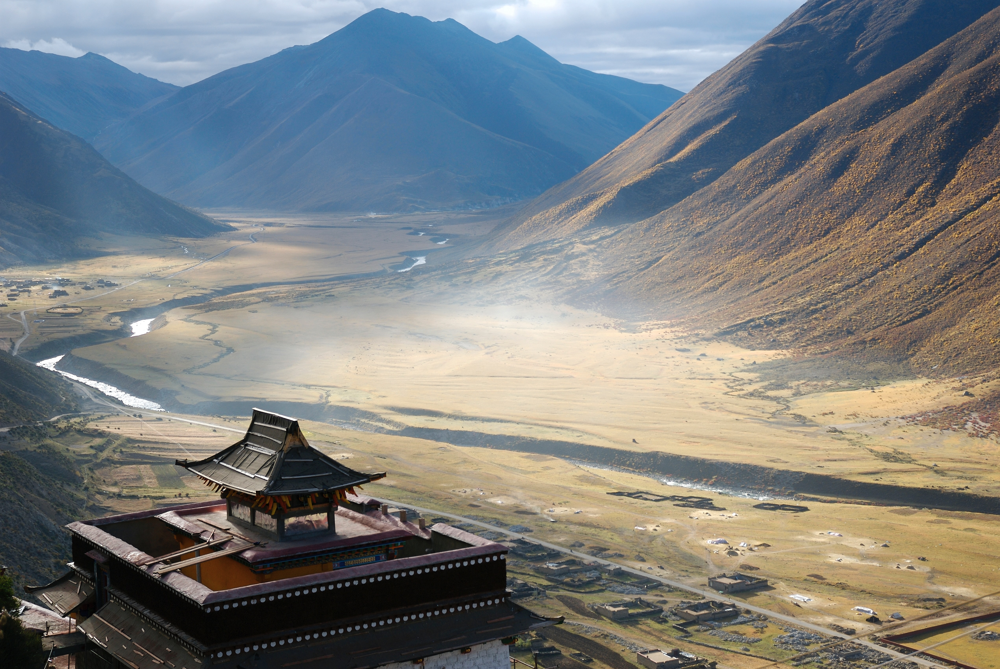

- Tibet
- css
- java
티베트(티베트어: བོད་ 뵈, 중국어: 西藏, 병음: Xīzàng)는 중앙아시아에 있는 티베트 고원의 지역으로,토착 티베트인들의 고향이다. 평균 고도는 약 4,900m이며, 지구상의 육지에서 가장 높은 곳이어서 '세계의 지붕'이라고 불린다. 티베트에서 가장 높은 곳은 해발 8,848미터의 에베레스트 산이다.
행정 구역 상 티베트의 서부와 중부는 티베트 자치구(시짱 자치구), 동부는 쓰촨성과 칭하이성 등의 민족자치주로 나뉜다.
css도 배울
